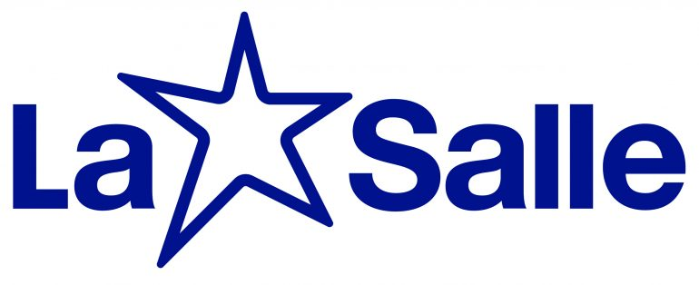

<!DOCTYPE html>
<html lang="en">
<head>
    <meta charset="UTF-8">
    <meta http-equiv="X-UA-Compatible" content="IE=edge">
    <meta name="viewport" content="width=device-width, initial-scale=1.0">
    <title>Document</title>
    <link rel="stylesheet" href="style.css">
</head>
<body>

    
</body>
</html>
<!DOCTYPE html>
<html lang="en">
<head>
    <meta charset="UTF-8">
    <meta http-equiv="X-UA-Compatible" content="IE=edge">
    <meta name="viewport" content="width=device-width, initial-scale=1.0">
    <title>Document</title>
    <link rel="stylesheet" href="style.css">
</head>
<body>
    <header class="cabecalho">
        
        <ul class="cabecalho-lista">
            <li class="cabecalho-lista-item">Escola</li>
            <li class="cabecalho-lista-item">Estudante</li>
        </ul>
    </header>

    <section class="escola">
        <h2 class="escola-titulo">Sobre a Escola</h2>
                    <p class="escola-texto-um">Surgido como uma pequena escola paroquial, O Colégio La Salle São João foi fundado no dia 1º de março de 1928. Em setembro de 1951, a direção e administração do Ginásio foi assumida integralmente pelos Irmãos Lassalistas. Hoje, a instituição atende alunos da Educação Infantil ao Ensino Médio, além do Turno Integral.</p>
                    <p class="escola-texto-dois"> A Estrela lassalista é a versão estilizada e significa Fidelidade aos princípios da instituição, seguindo os valores de fé, sabedoria e zelo. Possui cinco pontas, lembrando a presença lassalista nos cincos continentes e a abertura para novos caminhos e oportunidades.</p>
                   
      </section>

</body>
</html>
